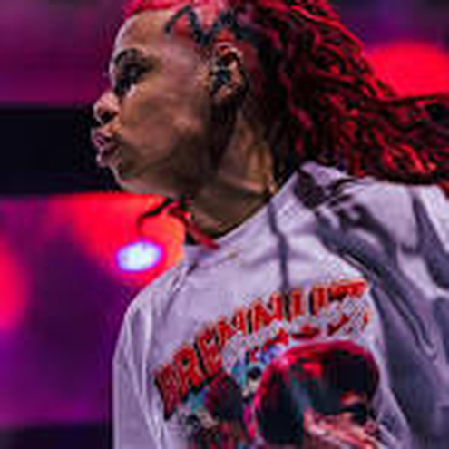
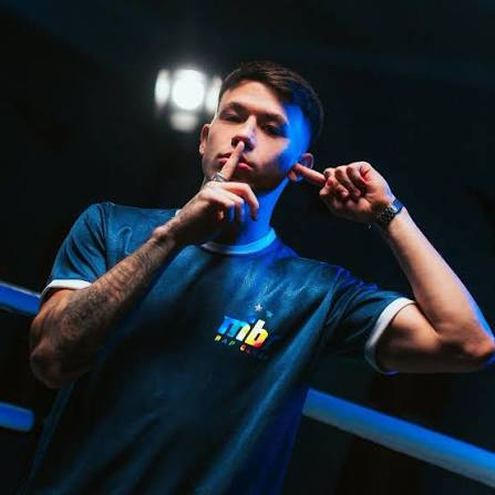
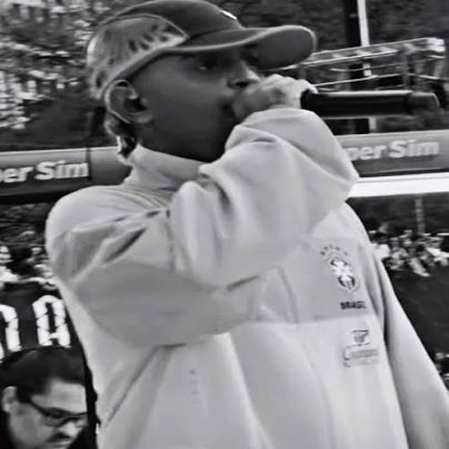

Papel na BDA 10 Anos: Campeão do trio e eleito MVP (Melhor MC da edição).
• Trajetória e Destaque: Tornou-se o único MC da história a receber o
prêmio de MVP em duas edições comemorativas de aniversário da BDA (a primeira foi na BDA 7 Anos). Consagrou-se com seu terceiro
título de aniversário, firmando-se como um dos maiores nomes e uma
das maiores inspirações da nova geração do freestyle nacional.

Papel na BDA 10 Anos: Campeão do trio ao lado de Jotapê e Negrote.
• Trajetória e Destaque: Conquistou o seu terceiro título de aniversário
da BDA (tendo vencido antes na BDA 5 e na BDA 8 Anos). Ficou marcado por vencer edições com parceiros e adversários diferentes,
provando versatilidade, alto nível técnico e consistência no circuito de rima improvisada.

Papel na BDA 10 Anos: Campeão integrando o trio vitorioso.
• Trajetória e Destaque: Conquistou o seu primeiro título de aniversário da
BDA, coroando anos de corre, vivência e batalhas de freestyle
pelas ruas de São Paulo e região metropolitana (como Guarulhos).
